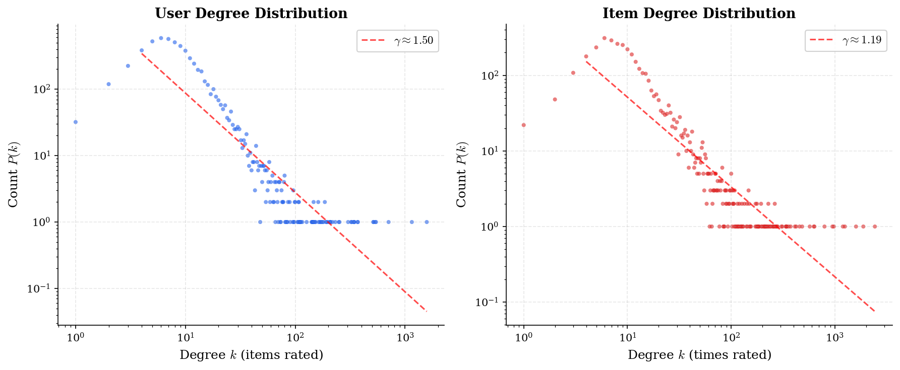
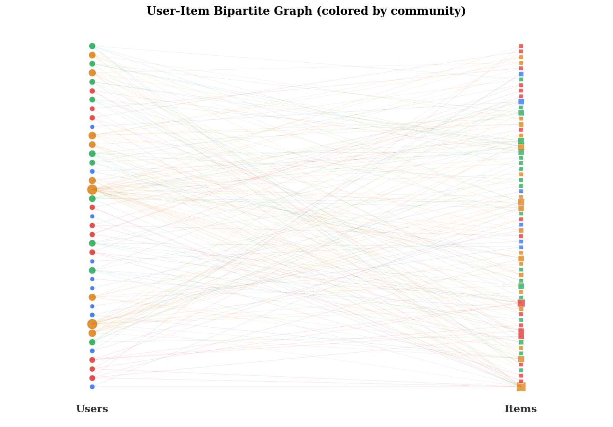
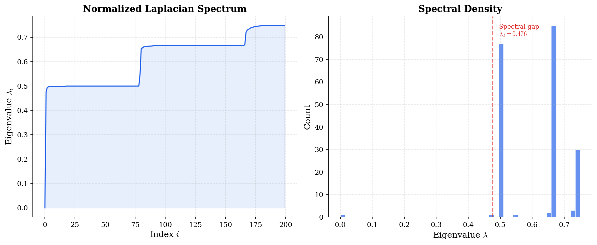

A network science perspective on collaborative filtering.
Introduction
Every recommendation system is secretly a network problem. When Netflix suggests a movie or Spotify queues a song, the underlying machinery operates on a graph — users connected to items through interactions, users connected to users through shared taste, items connected through co-consumption patterns.
This post explores why thinking about recommendations through the lens of network science unlocks powerful intuitions and algorithms that pure matrix-factorization approaches miss.
The User-Item Bipartite Graph
At its core, any collaborative filtering dataset can be represented as a bipartite graph $G = (U \cup I, E)$, where $U$ is the set of users, $I$ is the set of items, and $E \subseteq U \times I$ represents observed interactions (ratings, clicks, purchases).
This isn't just a convenient representation — it's a structural one. The topology of this graph encodes information that tabular data alone cannot capture.
Degree Distribution: Power Laws Everywhere
One of the most fundamental observations in network science is that real-world networks exhibit scale-free degree distributions:
$$P(k) \sim k^{-\gamma}$$In recommendation data, user degree (number of items consumed) follows a heavy-tailed distribution — a few power users interact with thousands of items, while most users interact with a handful. Item degree (popularity) similarly follows a power law.
This has immediate consequences: standard loss functions weight all interactions equally, but high-degree nodes dominate gradient updates. Popular items are easy to recommend; the real value is in the long tail.

Small-World Property
Real user-item graphs exhibit the small-world property: most user pairs are connected by short paths through shared items. The average path length scales as:
$$\langle d \rangle \sim \frac{\ln N}{\ln \langle k \rangle}$$This means collaborative filtering signals propagate quickly — a 2-hop path (User A → Item X → User B) already captures "users who liked the same item," and 3-4 hops capture surprisingly rich preference patterns.
Community Structure = Taste Clusters
Network science provides principled methods for community detection — finding densely connected subgroups within a graph. In the recommendation context, communities correspond to taste clusters: a community of users who all watch sci-fi anime, a community centered around indie folk music, or cross-cutting communities for users with eclectic taste.
The modularity of a partition measures how well communities are separated:
$$Q = \frac{1}{2m} \sum_{ij} \left[ A_{ij} - \frac{k_i k_j}{2m} \right] \delta(c_i, c_j)$$where $A_{ij}$ is the adjacency matrix, $k_i$ is the degree of node $i$, $m$ is the total number of edges, and $\delta(c_i, c_j) = 1$ if nodes $i$ and $j$ belong to the same community.
Algorithms like Louvain can detect these communities efficiently, providing a natural way to pre-filter recommendation candidates, add community membership as features, and explain recommendations.

Link Prediction: The Original Recommendation Problem
Before "recommendation systems" existed as a field, network scientists were already studying link prediction — predicting which edges will appear in a network. This is literally the recommendation problem: predict which user-item pairs will interact.
Classical link prediction heuristics include:
- Common Neighbors: $\text{CN}(u, i) = |N(u) \cap N(i)|$ — count shared neighbors in the projected graph
- Adamic-Adar: $\text{AA}(u, i) = \sum_{z \in N(u) \cap N(i)} \frac{1}{\log |N(z)|}$ — shared niche items count more than shared popular items
- Preferential Attachment: $\text{PA}(u, i) = |N(u)| \cdot |N(i)|$ — active users and popular items are more likely to interact
The beauty: these require zero training and provide interpretable scores. In the next post, we'll benchmark these against learned methods and see when simplicity wins.
From Spectral Theory to GNNs
The deepest connection between network science and modern RecSys lies in spectral graph theory. The graph Laplacian $L = D - A$ (where $D$ is the degree matrix) has eigenvalues $0 = \lambda_1 \leq \lambda_2 \leq \ldots \leq \lambda_n$ that encode the graph's fundamental structure.
Graph Neural Networks (GCNs) can be understood as learnable spectral filters on this Laplacian. LightGCN, one of the most effective GNN-based recommenders, simplifies this to:
$$\mathbf{e}_u^{(k+1)} = \sum_{i \in \mathcal{N}(u)} \frac{1}{\sqrt{|\mathcal{N}(u)|} \sqrt{|\mathcal{N}(i)|}} \, \mathbf{e}_i^{(k)}$$This is symmetric-normalized adjacency matrix multiplication — a spectral operation. The normalization comes directly from the normalized Laplacian $\tilde{L} = D^{-1/2} L D^{-1/2}$.

What's Next
This post established the conceptual bridge between network science and recommendation systems. In upcoming posts, we'll get our hands dirty:
- Part 2: Implement link prediction heuristics as RecSys baselines and benchmark against learned methods on RecBole
- Part 3: Build community-aware collaborative filtering using Louvain + graph augmentation
- Part 4: Deep dive into the spectral theory behind GNN recommendations, with custom implementations
The key insight: network science doesn't replace machine learning for recommendations — it informs it. Understanding the structure of your data graph tells you which algorithms will work, why they work, and where they'll fail.
Tools used: Python, NumPy, SciPy, matplotlib. Dataset: synthetic power-law graphs (MovieLens-1M structure). All code available on GitHub.